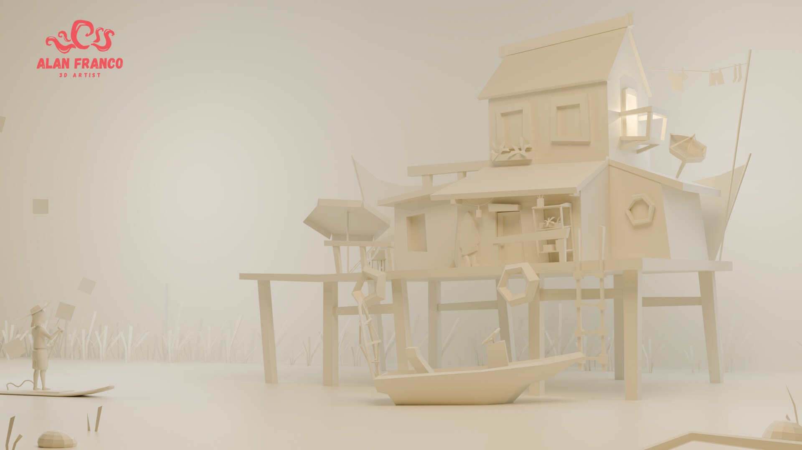
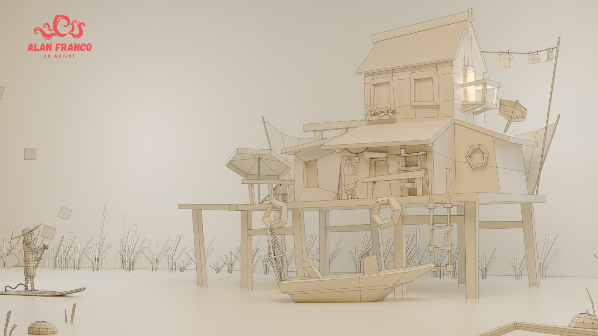

Swamp House
A 2D concept turned into a low-poly 3D environment, with lighting doing the storytelling.
- Concept
- Mathias Fekete
- Role
- Modeling, texturing and lighting
- Tools
- Blender, Photoshop
- Year
- 2025

Overview
Inspired by Mathias Fekete's concept art, this 3D environment was created in Blender and textured in Photoshop. The focus of the piece is a serene, atmospheric setting achieved through detailed lighting.
The challenge was to keep the concept's silhouettes, palette and mood while building the scene in 3D: a house on stilts, a dock, a boat, reeds and a small figure paddling in the foreground. I kept the modeling clean and low-poly, and let lighting and color carry the mood.
Warm glows from the windows contrast with cool green and blue ambient light, and soft shadows add depth. The clay and wireframe renders below show how the scene is built before texturing.
What I did
- Translated a 2D concept into 3D, matching its shapes, palette and mood while keeping the scene readable.
- Modeled the house, dock, boat, props and vegetation in Blender with a clean, stylized low-poly approach.
- Textured the assets in Photoshop.
- Built the atmosphere with lighting: warm window glows against cool ambient color, soft shadows and depth.
- Presented the scene with clay and wireframe passes to show the quality of the models.
Gallery

